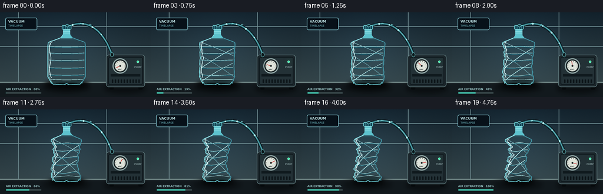
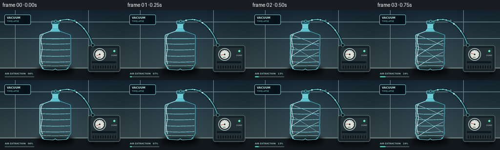

CODING AGENTS AS PIXEL WORLD MODELS
traex/GPT-5.6-Sol · mechanics_0023
点击播放 · 原生 RGB 像素
逐轮保存的候选
回放视频、检查图与代码变化。
每份候选均可单独播放。实际图片检查记录在下方工具轨迹中。
候选 01播放与检查图
点击播放 · 原生 RGB 像素


展开代码变化
--- 上一保存版本
+++ 本次保存版本
@@ -0,0 +1,237 @@
+from pathlib import Path
+import math
+import numpy as np
+from PIL import Image, ImageDraw, ImageFont, ImageFilter
+import artifact_io
+
+CASE = Path(__file__).resolve().parent
+W,H,N = 256,144,20
+S=4
+
+def P(x): return int(round(x*S))
+def pts(ps): return [(P(x),P(y)) for x,y in ps]
+
+def font(size, bold=False):
+ path = '/usr/share/fonts/truetype/dejavu/DejaVuSans-Bold.ttf' if bold else '/usr/share/fonts/truetype/dejavu/DejaVuSans.ttf'
+ return ImageFont.truetype(path, P(size))
+
+# Stable fine background texture
+rng=np.random.default_rng(223)
+noise_small=rng.normal(0,1,(H*S,W*S))
+
+def bezier(draw, p0,p1,p2,p3, fill, width):
+ arr=[]
+ for t in np.linspace(0,1,50):
+ u=1-t
+ arr.append((u**3*p0[0]+3*u*u*t*p1[0]+3*u*t*t*p2[0]+t**3*p3[0],
+ u**3*p0[1]+3*u*u*t*p1[1]+3*u*t*t*p2[1]+t**3*p3[1]))
+ draw.line(pts(arr), fill=fill, width=P(width), joint='curve')
+
+# bottle outline as paired boundaries. x coordinates depend continuously on implosion progress.
+def bottle_bounds(y,p):
+ # undeformed PET profile
+ if y < 38:
+ half=6.0
+ elif y < 43:
+ half=6 + (y-38)*0.8
+ elif y < 51:
+ half=10 + (y-43)*2.65
+ elif y < 58:
+ half=31.2 + (y-51)*0.12
+ elif y < 109:
+ half=32.0
+ elif y < 118:
+ half=32.0-(y-109)*0.55
+ else:
+ half=27.0-(y-118)*0.4
+ center=113.0
+ # asymmetric, organic inward buckling under vacuum
+ q=p**1.10
+ mid=math.exp(-((y-80)/27)**2)
+ low=math.exp(-((y-105)/15)**2)
+ high=math.exp(-((y-57)/14)**2)
+ left_in=q*(14.8*mid+6.5*low+4.0*high)
+ right_in=q*(18.2*mid+8.0*low+5.2*high)
+ # wrinkled edge appears as collapse progresses, but vanishes at rigid neck/base
+ bodygate=max(0,min(1,(y-47)/10))*max(0,min(1,(121-y)/8))
+ wave=q*bodygate*(2.1*math.sin(y*.42+0.5)+1.15*math.sin(y*.91))
+ shift=q*bodygate*(2.1*math.sin((y-47)*.095)-1.0*low)
+ left=center-half+left_in+shift+wave
+ right=center+half-right_in+shift-0.72*wave
+ return left,right
+
+def scene(i):
+ t=i/(N-1)
+ # smooth accelerating timelapse, ends nearly fully evacuated
+ p=1-(1-t)**1.25
+ # Background gradient
+ yy=np.arange(H*S)[:,None]/S
+ xx=np.arange(W*S)[None,:]/S
+ top=np.array([18,33,43.],float); bot=np.array([52,68,72.],float)
+ g=np.clip(yy/125,0,1)[...,None]
+ arr=np.empty((H*S,W*S,3),dtype=float)
+ arr[:]=top+(bot-top)*g
+ # cool spotlight centered on bottle
+ light=np.exp(-(((xx-114)/83)**2+((yy-64)/66)**2))*17
+ arr += light[...,None]*np.array([.42,.77,1.0])
+ arr += noise_small[...,None]*0.7
+ im=Image.fromarray(np.uint8(np.clip(arr,0,255)),'RGB').convert('RGBA')
+ d=ImageDraw.Draw(im,'RGBA')
+ # wall panel seams / restrained lab setting
+ d.line([(0,P(24)),(P(256),P(24))],fill=(127,161,166,25),width=P(1))
+ d.line([(0,P(58)),(P(256),P(58))],fill=(124,156,160,19),width=P(1))
+ for x in [31,181]: d.line([(P(x),0),(P(x),P(119))],fill=(116,145,150,18),width=P(1))
+ # top-left label plate
+ d.rounded_rectangle((P(9),P(9),P(63),P(30)),radius=P(3),fill=(7,17,25,128),outline=(119,180,190,70),width=P(1))
+ d.text((P(14),P(12)),"VACUUM",font=font(5.8,True),fill=(196,233,235,220))
+ d.text((P(14),P(20)),"TIMELAPSE",font=font(4.6),fill=(114,188,196,210))
+ # counter and back rim
+ d.rectangle((0,P(118),P(256),P(144)),fill=(18,25,29,255))
+ d.rectangle((0,P(118),P(256),P(120)),fill=(106,127,127,100))
+ # soft floor reflections
+ refl=Image.new('RGBA',im.size,(0,0,0,0)); rd=ImageDraw.Draw(refl,'RGBA')
+ rd.ellipse((P(72),P(120),P(153),P(136)),fill=(6,10,12,125))
+ rd.ellipse((P(177),P(121),P(248),P(137)),fill=(5,8,10,160))
+ refl=refl.filter(ImageFilter.GaussianBlur(P(4))); im=Image.alpha_composite(im,refl); d=ImageDraw.Draw(im,'RGBA')
+
+ # Vacuum machine on right
+ # feet
+ d.rounded_rectangle((P(186),P(124),P(193),P(131)),radius=P(1),fill=(4,8,10,255))
+ d.rounded_rectangle((P(235),P(124),P(242),P(131)),radius=P(1),fill=(4,8,10,255))
+ # housing body
+ d.rounded_rectangle((P(180),P(72),P(246),P(127)),radius=P(5),fill=(27,38,43,255),outline=(92,118,121,210),width=P(1))
+ d.rounded_rectangle((P(184),P(76),P(242),P(123)),radius=P(3),fill=(35,49,54,255),outline=(12,21,25,220),width=P(1))
+ d.rectangle((P(188),P(105),P(238),P(109)),fill=(15,25,29,170))
+ # vent slots
+ for x in range(190,239,5):
+ d.rounded_rectangle((P(x),P(114),P(x+2),P(120)),radius=P(.7),fill=(8,15,18,210))
+ # status light pulsing
+ glow=Image.new('RGBA',im.size,(0,0,0,0)); gd=ImageDraw.Draw(glow,'RGBA')
+ gd.ellipse((P(229),P(79),P(239),P(89)),fill=(51,229,169,40+int(20*math.sin(i*1.7)**2)))
+ glow=glow.filter(ImageFilter.GaussianBlur(P(4))); im=Image.alpha_composite(im,glow); d=ImageDraw.Draw(im,'RGBA')
+ d.ellipse((P(232),P(82),P(236),P(86)),fill=(66,236,174,245),outline=(183,255,225,200),width=P(.5))
+ d.text((P(228),P(91)),"PUMP",font=font(3.8,True),fill=(130,153,155,210))
+ # pressure gauge with vacuum needle
+ d.ellipse((P(191),P(78),P(217),P(104)),fill=(9,17,20,255),outline=(143,165,164,240),width=P(2))
+ d.ellipse((P(194),P(81),P(214),P(101)),fill=(222,227,218,255),outline=(44,55,55,255),width=P(1))
+ gc=(204,91)
+ for a in np.linspace(math.radians(155),math.radians(385),10):
+ x1=gc[0]+7.3*math.cos(a); y1=gc[1]+7.3*math.sin(a)
+ x2=gc[0]+8.7*math.cos(a); y2=gc[1]+8.7*math.sin(a)
+ d.line(pts([(x1,y1),(x2,y2)]),fill=(42,50,48,255),width=P(.5))
+ ang=math.radians(155+218*p)
+ d.line(pts([gc,(gc[0]+7.5*math.cos(ang),gc[1]+7.5*math.sin(ang))]),fill=(211,49,48,255),width=P(1.1))
+ d.ellipse((P(202.5),P(89.5),P(205.5),P(92.5)),fill=(34,41,40,255))
+ d.text((P(200),P(95)),"VAC",font=font(3.2,True),fill=(55,65,63,255))
+
+ # hose behind bottle, from stopper over to pump intake
+ # black outer hose then translucent cyan line
+ bezier(d,(114,25),(145,9),(174,26),(190,72),(4,10,13,245),5.0)
+ bezier(d,(114,25),(145,9),(174,26),(190,72),(38,104,115,255),3.2)
+ bezier(d,(114,25),(145,9),(174,26),(190,72),(127,208,210,90),0.8)
+ d.ellipse((P(187),P(68),P(193),P(76)),fill=(11,22,25,255),outline=(83,150,154,230),width=P(1))
+ # moving pale air parcels visibly travel from bottle to pump
+ # approximate points along cubic
+ for k in range(4):
+ u=(k*.24+t*.44)%1.0
+ u=.10+.82*u
+ om=1-u
+ x=om**3*114+3*om*om*u*145+3*om*u*u*174+u**3*190
+ y=om**3*25+3*om*om*u*9+3*om*u*u*26+u**3*72
+ r=1.1 if k%2 else 1.5
+ d.ellipse((P(x-r),P(y-r),P(x+r),P(y+r)),fill=(167,237,236,150-int(60*p)),outline=(220,255,255,130),width=P(.5))
+
+ # bottle shadow
+ sh=Image.new('RGBA',im.size,(0,0,0,0)); sd=ImageDraw.Draw(sh,'RGBA')
+ sd.ellipse((P(77+11*p),P(115),P(150-11*p),P(131)),fill=(0,0,0,180))
+ sh=sh.filter(ImageFilter.GaussianBlur(P(4))); im=Image.alpha_composite(im,sh); d=ImageDraw.Draw(im,'RGBA')
+
+ # Sample outline top-to-bottom, then reversed for polygon
+ ys=np.linspace(37.5,121,170)
+ left=[]; right=[]
+ for y in ys:
+ l,r=bottle_bounds(float(y),p); left.append((l,y)); right.append((r,y))
+ poly=left+right[::-1]
+ # PET body layered translucency
+ body=Image.new('RGBA',im.size,(0,0,0,0)); bd=ImageDraw.Draw(body,'RGBA')
+ bd.polygon(pts(poly),fill=(82,191,207,34),outline=None)
+ # soft internal vertical cyan cast
+ inner=[]
+ for y in ys[20:-10]:
+ l,r=bottle_bounds(float(y),p); inner.append((l+2,y))
+ for y in ys[-11:19:-1]:
+ l,r=bottle_bounds(float(y),p); inner.append((r-2,y))
+ bd.polygon(pts(inner),fill=(76,174,186,15))
+ im=Image.alpha_composite(im,body); d=ImageDraw.Draw(im,'RGBA')
+ # crisp contours with doubled edge
+ d.line(pts(left),fill=(131,227,234,195),width=P(1.15),joint='curve')
+ d.line(pts(right),fill=(69,153,169,220),width=P(1.25),joint='curve')
+ d.line(pts([(x+1.8,y) for x,y in left]),fill=(221,255,255,75),width=P(.55))
+
+ # neck and sealed stopper, over body
+ # neck deforms only slightly and stays sealed
+ d.polygon(pts([(107,39),(107,27),(119,27),(119,39),(123,44),(103,44)]),fill=(93,194,205,40),outline=(116,217,226,180))
+ # neck thread rings
+ for y in [29,32,35]: d.line(pts([(107,y),(119,y)]),fill=(146,226,231,140),width=P(1))
+ # blue sealing cap / hose adapter
+ d.rounded_rectangle((P(105),P(22),P(121),P(29)),radius=P(1.5),fill=(20,71,87,255),outline=(113,212,216,240),width=P(1))
+ for x in [108,111,114,117]: d.line(pts([(x,23),(x,28)]),fill=(102,178,185,150),width=P(.6))
+ d.ellipse((P(111),P(20),P(117),P(25)),fill=(18,48,58,255),outline=(97,185,190,240),width=P(1))
+
+ # molded horizontal ribs, progressively compressed and distorted with outline
+ for y0 in [58,69,81,94,106,114]:
+ l,r=bottle_bounds(y0,p)
+ # rib follows slight arc; shortened naturally by implosion
+ mid=(l+r)/2
+ sag=(0.7+1.8*p*math.sin(y0*.31))
+ line=[]
+ for z in np.linspace(0,1,28):
+ x=l+2+(r-l-4)*z
+ y=y0+sag*math.sin(math.pi*z)+p*1.2*math.sin(2*math.pi*z+y0)
+ line.append((x,y))
+ d.line(pts(line),fill=(182,240,241,95),width=P(.8))
+ if y0<110: d.line(pts([(x,y+1.1) for x,y in line]),fill=(22,104,124,62),width=P(.65))
+
+ # moving internal creases communicate plastic crumpling
+ if p>0.08:
+ crease_alpha=int(55+105*p)
+ creases=[(51,74,1),(61,95,-1),(74,109,1),(86,116,-1)]
+ for ya,yb,sg in creases:
+ l1,r1=bottle_bounds(ya,p); l2,r2=bottle_bounds(yb,p)
+ if sg>0: a=(l1+2,ya); b=(r2-2,yb)
+ else: a=(r1-2,ya); b=(l2+2,yb)
+ mx=(a[0]+b[0])/2+sg*3*p; my=(a[1]+b[1])/2-2
+ # quadratic sampled
+ qline=[]
+ for u in np.linspace(0,1,20):
+ qline.append(((1-u)**2*a[0]+2*(1-u)*u*mx+u*u*b[0],(1-u)**2*a[1]+2*(1-u)*u*my+u*u*b[1]))
+ d.line(pts(qline),fill=(206,250,249,crease_alpha),width=P(.7))
+ d.line(pts([(x+1,y+.7) for x,y in qline]),fill=(24,97,115,int(crease_alpha*.55)),width=P(.55))
+ # vertical specular glint left; fragmented as bottle buckles
+ gl=[]
+ for y in np.linspace(50,111,42):
+ l,r=bottle_bounds(float(y),p)
+ gl.append((l+4.0+1.2*math.sin(y*.18),y))
+ d.line(pts(gl),fill=(221,255,255,130),width=P(1.1))
+ # base ring and feet
+ l,r=bottle_bounds(118,p)
+ d.line(pts([(l+1,118),(l+4,122),((l+r)/2-4,123),((l+r)/2,121),((l+r)/2+4,123),(r-4,122),(r-1,118)]),fill=(108,206,216,190),width=P(1.2),joint='curve')
+
+ # air-flow cue beside cap; faint directional chevrons in hose region
+ for k in range(2):
+ x=137+k*16+2*math.sin(i*.6)
+ y=18+k*2
+ d.line(pts([(x-2,y+2),(x,y),(x+2,y+1)]),fill=(133,217,220,100),width=P(.7))
+
+ # progress caption bottom-left, visually supports timelapse
+ d.text((P(10),P(128)),f"AIR EXTRACTION {int(round(p*100)):02d}%",font=font(4.6,True),fill=(149,190,191,215))
+ d.rounded_rectangle((P(10),P(136),P(70),P(138)),radius=P(1),fill=(63,79,81,180))
+ d.rounded_rectangle((P(10),P(136),P(10+60*p),P(138)),radius=P(1),fill=(74,212,187,230))
+
+ # downsample antialiased
+ im=im.convert('RGB').resize((W,H),Image.Resampling.LANCZOS)
+ return np.asarray(im,dtype=np.uint8)
+
+frames=np.stack([scene(i) for i in range(N)],axis=0)
+artifact_io.save(frames,CASE)
+print('saved',frames.shape,frames.dtype)
可观测工具轨迹
实际执行的命令与返回图片。
命令 1exit 0
/bin/bash -lc "cat prompt.txt && printf '\\n---RULES---\\n' && cat GENERATION_RULES.md && printf '\\n---SPEC---\\n' && cat task_spec.json"
命令 2exit 0
/bin/bash -lc "find . -maxdepth 2 -type f -printf '%p\\n' | sort"
命令 3exit 0
/bin/bash -lc 'cat artifact_io.py'
命令 4exit 0
/bin/bash -lc "cat > generate.py <<'PY'
from pathlib import Path
import math
import numpy as np
from PIL import Image, ImageDraw, ImageFont, ImageFilter
import artifact_io
CASE = Path(__file__).resolve().parent
W,H,N = 256,144,20
S=4
def P(x): return int(round(x*S))
def pts(ps): return [(P(x),P(y)) for x,y in ps]
def font(size, bold=False):
path = '/usr/share/fonts/truetype/dejavu/DejaVuSans-Bold.ttf' if bold else '/usr/share/fonts/truetype/dejavu/DejaVuSans.ttf'
return ImageFont.truetype(path, P(size))
# Stable fine background texture
rng=np.random.default_rng(223)
noise_small=rng.normal(0,1,(H*S,W*S))
def bezier(draw, p0,p1,p2,p3, fill, width):
arr=[]
for t in np.linspace(0,1,50):
u=1-t
arr.append((u**3*p0[0]+3*u*u*t*p1[0]+3*u*t*t*p2[0]+t**3*p3[0],
u**3*p0[1]+3*u*u*t*p1[1]+3*u*t*t*p2[1]+t**3*p3[1]))
draw.line(pts(arr), fill=fill, width=P(width), joint='curve')
# bottle outline as paired boundaries. x coordinates depend continuously on implosion progress.
def bottle_bounds(y,p):
# undeformed PET profile
if y < 38:
half=6.0
elif y < 43:
half=6 + (y-38)*0.8
elif y < 51:
half=10 + (y-43)*2.65
elif y < 58:
half=31.2 + (y-51)*0.12
elif y < 109:
half=32.0
elif y < 118:
half=32.0-(y-109)*0.55
else:
half=27.0-(y-118)*0.4
center=113.0
# asymmetric, organic inward buckling under vacuum
q=p**1.10
mid=math.exp(-((y-80)/27)**2)
low=math.exp(-((y-105)/15)**2)
high=math.exp(-((y-57)/14)**2)
left_in=q*(14.8*mid+6.5*low+4.0*high)
right_in=q*(18.2*mid+8.0*low+5.2*high)
# wrinkled edge appears as collapse progresses, but vanishes at rigid neck/base
bodygate=max(0,min(1,(y-47)/10))*max(0,min(1,(121-y)/8))
wave=q*bodygate*(2.1*math.sin(y*.42+0.5)+1.15*math.sin(y*.91))
shift=q*bodygate*(2.1*math.sin((y-47)*.095)-1.0*low)
left=center-half+left_in+shift+wave
right=center+half-right_in+shift-0.72*wave
return left,right
def scene(i):
t=i/(N-1)
# smooth accelerating timelapse, ends nearly fully evacuated
p=1-(1-t)**1.25
# Background gradient
yy=np.arange(H*S)[:,None]/S
xx=np.arange(W*S)[None,:]/S
top=np.array([18,33,43.],float); bot=np.array([52,68,72.],float)
g=np.clip(yy/125,0,1)[...,None]
arr=np.empty((H*S,W*S,3),dtype=float)
arr[:]=top+(bot-top)*g
# cool spotlight centered on bottle
light=np.exp(-(((xx-114)/83)**2+((yy-64)/66)**2))*17
arr += light[...,None]*np.array([.42,.77,1.0])
arr += noise_small[...,None]*0.7
im=Image.fromarray(np.uint8(np.clip(arr,0,255)),'RGB').convert('RGBA')
d=ImageDraw.Draw(im,'RGBA')
# wall panel seams / restrained lab setting
d.line([(0,P(24)),(P(256),P(24))],fill=(127,161,166,25),width=P(1))
d.line([(0,P(58)),(P(256),P(58))],fill=(124,156,160,19),width=P(1))
for x in [31,181]: d.line([(P(x),0),(P(x),P(119))],fill=(116,145,150,18),width=P(1))
# top-left label plate
d.rounded_rectangle((P(9),P(9),P(63),P(30)),radius=P(3),fill=(7,17,25,128),outline=(119,180,190,70),width=P(1))
d.text((P(14),P(12)),\"VACUUM\",font=font(5.8,True),fill=(196,233,235,220))
d.text((P(14),P(20)),\"TIMELAPSE\",font=font(4.6),fill=(114,188,196,210))
# counter and back rim
d.rectangle((0,P(118),P(256),P(144)),fill=(18,25,29,255))
d.rectangle((0,P(118),P(256),P(120)),fill=(106,127,127,100))
# soft floor reflections
refl=Image.new('RGBA',im.size,(0,0,0,0)); rd=ImageDraw.Draw(refl,'RGBA')
rd.ellipse((P(72),P(120),P(153),P(136)),fill=(6,10,12,125))
rd.ellipse((P(177),P(121),P(248),P(137)),fill=(5,8,10,160))
refl=refl.filter(ImageFilter.GaussianBlur(P(4))); im=Image.alpha_composite(im,refl); d=ImageDraw.Draw(im,'RGBA')
# Vacuum machine on right
# feet
d.rounded_rectangle((P(186),P(124),P(193),P(131)),radius=P(1),fill=(4,8,10,255))
d.rounded_rectangle((P(235),P(124),P(242),P(131)),radius=P(1),fill=(4,8,10,255))
# housing body
d.rounded_rectangle((P(180),P(72),P(246),P(127)),radius=P(5),fill=(27,38,43,255),outline=(92,118,121,210),width=P(1))
d.rounded_rectangle((P(184),P(76),P(242),P(123)),radius=P(3),fill=(35,49,54,255),outline=(12,21,25,220),width=P(1))
d.rectangle((P(188),P(105),P(238),P(109)),fill=(15,25,29,170))
# vent slots
for x in range(190,239,5):
d.rounded_rectangle((P(x),P(114),P(x+2),P(120)),radius=P(.7),fill=(8,15,18,210))
# status light pulsing
glow=Image.new('RGBA',im.size,(0,0,0,0)); gd=ImageDraw.Draw(glow,'RGBA')
gd.ellipse((P(229),P(79),P(239),P(89)),fill=(51,229,169,40+int(20*math.sin(i*1.7)**2)))
glow=glow.filter(ImageFilter.GaussianBlur(P(4))); im=Image.alpha_composite(im,glow); d=ImageDraw.Draw(im,'RGBA')
d.ellipse((P(232),P(82),P(236),P(86)),fill=(66,236,174,245),outline=(183,255,225,200),width=P(.5))
d.text((P(228),P(91)),\"PUMP\",font=font(3.8,True),fill=(130,153,155,210))
# pressure gauge with vacuum needle
d.ellipse((P(191),P(78),P(217),P(104)),fill=(9,17,20,255),outline=(143,165,164,240),width=P(2))
d.ellipse((P(194),P(81),P(214),P(101)),fill=(222,227,218,255),outline=(44,55,55,255),width=P(1))
gc=(204,91)
for a in np.linspace(math.radians(155),math.radians(385),10):
x1=gc[0]+7.3*math.cos(a); y1=gc[1]+7.3*math.sin(a)
x2=gc[0]+8.7*math.cos(a); y2=gc[1]+8.7*math.sin(a)
d.line(pts([(x1,y1),(x2,y2)]),fill=(42,50,48,255),width=P(.5))
ang=math.radians(155+218*p)
d.line(pts([gc,(gc[0]+7.5*math.cos(ang),gc[1]+7.5*math.sin(ang))]),fill=(211,49,48,255),width=P(1.1))
d.ellipse((P(202.5),P(89.5),P(205.5),P(92.5)),fill=(34,41,40,255))
d.text((P(200),P(95)),\"VAC\",font=font(3.2,True),fill=(55,65,63,255))
# hose behind bottle, from stopper over to pump intake
# black outer hose then translucent cyan line
bezier(d,(114,25),(145,9),(174,26),(190,72),(4,10,13,245),5.0)
bezier(d,(114,25),(145,9),(174,26),(190,72),(38,104,115,255),3.2)
bezier(d,(114,25),(145,9),(174,26),(190,72),(127,208,210,90),0.8)
d.ellipse((P(187),P(68),P(193),P(76)),fill=(11,22,25,255),outline=(83,150,154,230),width=P(1))
# moving pale air parcels visibly travel from bottle to pump
# approximate points along cubic
for k in range(4):
u=(k*.24+t*.44)%1.0
u=.10+.82*u
om=1-u
x=om**3*114+3*om*om*u*145+3*om*u*u*174+u**3*190
y=om**3*25+3*om*om*u*9+3*om*u*u*26+u**3*72
r=1.1 if k%2 else 1.5
d.ellipse((P(x-r),P(y-r),P(x+r),P(y+r)),fill=(167,237,236,150-int(60*p)),outline=(220,255,255,130),width=P(.5))
# bottle shadow
sh=Image.new('RGBA',im.size,(0,0,0,0)); sd=ImageDraw.Draw(sh,'RGBA')
sd.ellipse((P(77+11*p),P(115),P(150-11*p),P(131)),fill=(0,0,0,180))
sh=sh.filter(ImageFilter.GaussianBlur(P(4))); im=Image.alpha_composite(im,sh); d=ImageDraw.Draw(im,'RGBA')
# Sample outline top-to-bottom, then reversed for polygon
ys=np.linspace(37.5,121,170)
left=[]; right=[]
for y in ys:
l,r=bottle_bounds(float(y),p); left.append((l,y)); right.append((r,y))
poly=left+right[::-1]
# PET body layered translucency
body=Image.new('RGBA',im.size,(0,0,0,0)); bd=ImageDraw.Draw(body,'RGBA')
bd.polygon(pts(poly),fill=(82,191,207,34),outline=None)
# soft internal vertical cyan cast
inner=[]
for y in ys[20:-10]:
l,r=bottle_bounds(float(y),p); inner.append((l+2,y))
for y in ys[-11:19:-1]:
l,r=bottle_bounds(float(y),p); inner.append((r-2,y))
bd.polygon(pts(inner),fill=(76,174,186,15))
im=Image.alpha_composite(im,body); d=ImageDraw.Draw(im,'RGBA')
# crisp contours with doubled edge
d.line(pts(left),fill=(131,227,234,195),width=P(1.15),joint='curve')
d.line(pts(right),fill=(69,153,169,220),width=P(1.25),joint='curve')
d.line(pts([(x+1.8,y) for x,y in left]),fill=(221,255,255,75),width=P(.55))
# neck and sealed stopper, over body
# neck deforms only slightly and stays sealed
d.polygon(pts([(107,39),(107,27),(119,27),(119,39),(123,44),(103,44)]),fill=(93,194,205,40),outline=(116,217,226,180))
# neck thread rings
for y in [29,32,35]: d.line(pts([(107,y),(119,y)]),fill=(146,226,231,140),width=P(1))
# blue sealing cap / hose adapter
d.rounded_rectangle((P(105),P(22),P(121),P(29)),radius=P(1.5),fill=(20,71,87,255),outline=(113,212,216,240),width=P(1))
for x in [108,111,114,117]: d.line(pts([(x,23),(x,28)]),fill=(102,178,185,150),width=P(.6))
d.ellipse((P(111),P(20),P(117),P(25)),fill=(18,48,58,255),outline=(97,185,190,240),width=P(1))
# molded horizontal ribs, progressively compressed and distorted with outline
for y0 in [58,69,81,94,106,114]:
l,r=bottle_bounds(y0,p)
# rib follows slight arc; shortened naturally by implosion
mid=(l+r)/2
sag=(0.7+1.8*p*math.sin(y0*.31))
line=[]
for z in np.linspace(0,1,28):
x=l+2+(r-l-4)*z
y=y0+sag*math.sin(math.pi*z)+p*1.2*math.sin(2*math.pi*z+y0)
line.append((x,y))
d.line(pts(line),fill=(182,240,241,95),width=P(.8))
if y0<110: d.line(pts([(x,y+1.1) for x,y in line]),fill=(22,104,124,62),width=P(.65))
# moving internal creases communicate plastic crumpling
if p>0.08:
crease_alpha=int(55+105*p)
creases=[(51,74,1),(61,95,-1),(74,109,1),(86,116,-1)]
for ya,yb,sg in creases:
l1,r1=bottle_bounds(ya,p); l2,r2=bottle_bounds(yb,p)
if sg>0: a=(l1+2,ya); b=(r2-2,yb)
else: a=(r1-2,ya); b=(l2+2,yb)
mx=(a[0]+b[0])/2+sg*3*p; my=(a[1]+b[1])/2-2
# quadratic sampled
qline=[]
for u in np.linspace(0,1,20):
qline.append(((1-u)**2*a[0]+2*(1-u)*u*mx+u*u*b[0],(1-u)**2*a[1]+2*(1-u)*u*my+u*u*b[1]))
d.line(pts(qline),fill=(206,250,249,crease_alpha),width=P(.7))
d.line(pts([(x+1,y+.7) for x,y in qline]),fill=(24,97,115,int(crease_alpha*.55)),width=P(.55))
# vertical specular glint left; fragmented as bottle buckles
gl=[]
for y in np.linspace(50,111,42):
l,r=bottle_bounds(float(y),p)
gl.append((l+4.0+1.2*math.sin(y*.18),y))
d.line(pts(gl),fill=(221,255,255,130),width=P(1.1))
# base ring and feet
l,r=bottle_bounds(118,p)
d.line(pts([(l+1,118),(l+4,122),((l+r)/2-4,123),((l+r)/2,121),((l+r)/2+4,123),(r-4,122),(r-1,118)]),fill=(108,206,216,190),width=P(1.2),joint='curve')
# air-flow cue beside cap; faint directional chevrons in hose region
for k in range(2):
x=137+k*16+2*math.sin(i*.6)
y=18+k*2
d.line(pts([(x-2,y+2),(x,y),(x+2,y+1)]),fill=(133,217,220,100),width=P(.7))
# progress caption bottom-left, visually supports timelapse
d.text((P(10),P(128)),f\"AIR EXTRACTION {int(round(p*100)):02d}%\",font=font(4.6,True),fill=(149,190,191,215))
d.rounded_rectangle((P(10),P(136),P(70),P(138)),radius=P(1),fill=(63,79,81,180))
d.rounded_rectangle((P(10),P(136),P(10+60*p),P(138)),radius=P(1),fill=(74,212,187,230))
# downsample antialiased
im=im.convert('RGB').resize((W,H),Image.Resampling.LANCZOS)
return np.asarray(im,dtype=np.uint8)
frames=np.stack([scene(i) for i in range(N)],axis=0)
artifact_io.save(frames,CASE)
print('saved',frames.shape,frames.dtype)
PY
python generate.py"命令 5exit 0
/bin/bash -lc "python - <<'PY'
from PIL import Image
im=Image.open('inspection.png'); print(im.size)
PY
ls -lh pixels.npz index.html inspection.png frames/00.png frames/19.png"保存候选 1 份；完成命令 5 次；可验证图片返回 0 张。原始 API 响应与完整日志保留在本地。